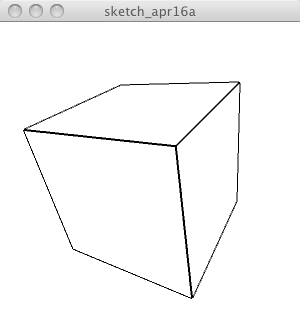

// Test by Andor Salga
import processing.opengl.*;
void setup() {
size( 300, 300, OPENGL );
background( 255 );
strokeWeight( 2 );
translate( width/2, height/2, 70 );
rotateZ( PI/4 );
rotateX( PI/4 );
rotateY( PI/4 );
box( 100, 100, 100 );
}